Cachoeira da Capivara
A Cachoeira da Capivara está localizada a cerca de 32,4 km do centro da cidade de Ipameri–GO, em uma altitude de 825 metros acima do nível do mar. O acesso é realizado inicialmente por estrada de terra até a proximidade de uma fazenda, onde os veículos podem ser deixados. A partir desse ponto, inicia-se uma caminhada de aproximadamente 2,2 km, com duração média de 1 hora., sendo cerca de 1,8 km em meio a mata fechada. O percurso é de difícil acesso, apresentando trechos íngremes e escorregadios, e não é recomendado para turmas escolares, sendo mais adequado para um pequeno número de visitantes.
Atenção e Recomendações
- Para maior segurança, é necessário o uso de perneiras e bastões, protetor solar, repelentes, além de roupas leves e confortáveis, calçados fechados e resistentes, hidratação constante e atenção redobrada.
- Ressalta-se ainda a importância de manter o lixo sob controle, recolhendo todos os materiais levados e contribuindo para a preservação do ambiente natural.
- O poço em que a cachoeira deságua apresenta aproximadamente 2 metros de profundidade, podendo variar de acordo com a época do ano, exigindo atenção e supervisão caso seja utilizado para banho.
A Tabela 1 apresenta a extensão total do percurso (cerca de 30 km, com partida do anel rodoviário - GO 213), de acordo com cada via.
| Tipo de via | Distância |
|---|---|
| Rodovia GO-307 – pavimentada | 1,43 km |
| Rodovia GO-307 - sem pavimentação | 25,25 km |
| Estrada Vicinal | 1,7 km |
| Caminhada | 2,2 km |
A Figura 1 mostra uma imagem de satélite da região e do trajeto completo da Cachoeira da Capivara.
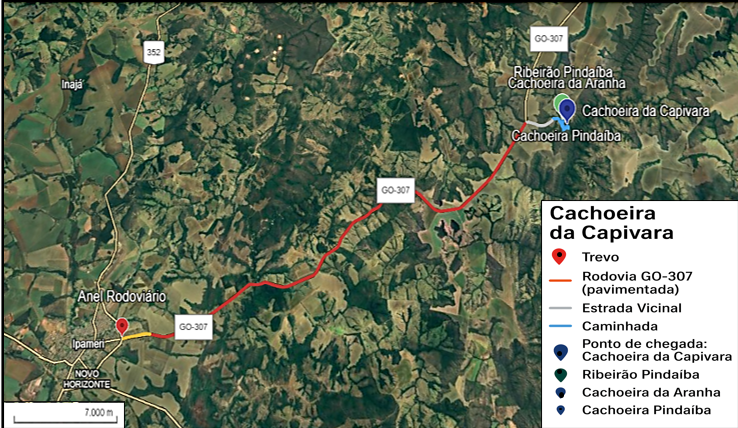
Durante a trilha, é possível observar o uso misto da terra, com a presença de gado integrado à paisagem local, como mostrado na Figura 2.
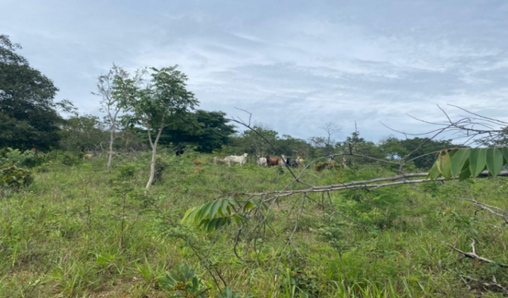
O percurso permite ao visitante interagir com diferentes fitofisionomias, revelando a diversidade ecológica característica da região. Ao adentrar pelo Cerradão, pode-se contemplar pequenos poços, como na Figura 3.
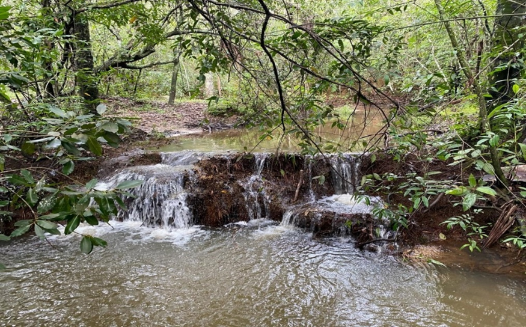
O principal atrativo da trilha é a própria cachoeira, que se insere em um ambiente natural de grande beleza cênica, composto por vegetação típica do Cerrado.
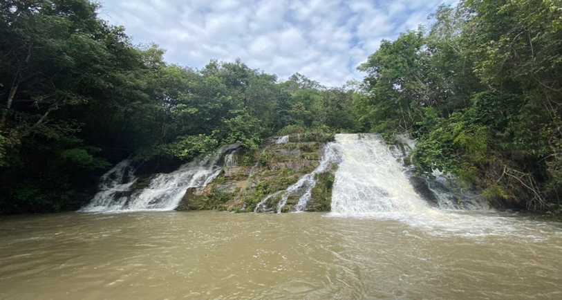
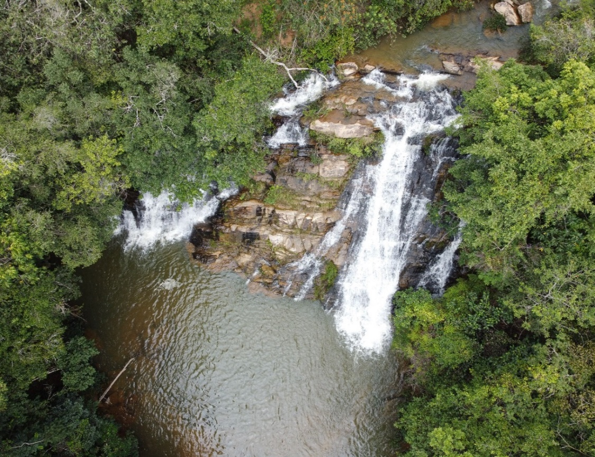
Crédito: Jair de Souza Júnior
Convém ressaltar que, acima desta trilha, há outras duas cachoeiras: a Cachoeira da Aranha e a Cachoeira Pindaíba, que deságua no Ribeirão Pindaíba, localizado a 130 metros da Cachoeira da Capivara.
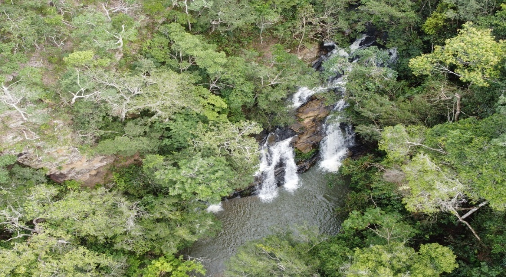
Crédito: Jair de Souza Júnior
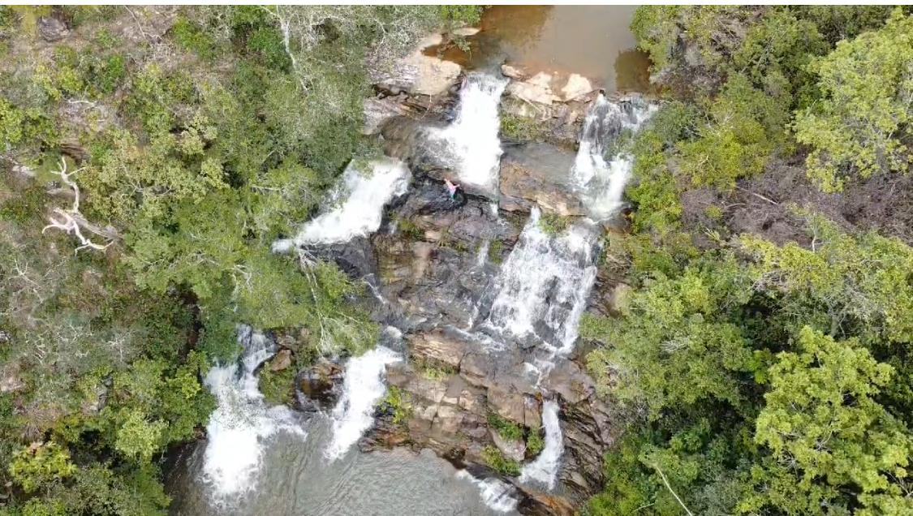
Crédito: Jair de Souza Júnior
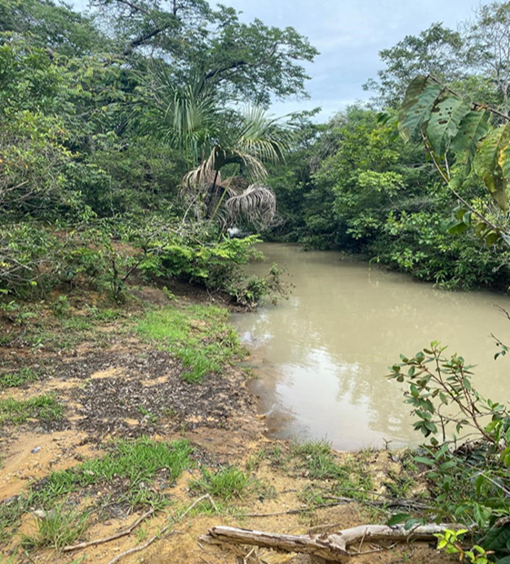
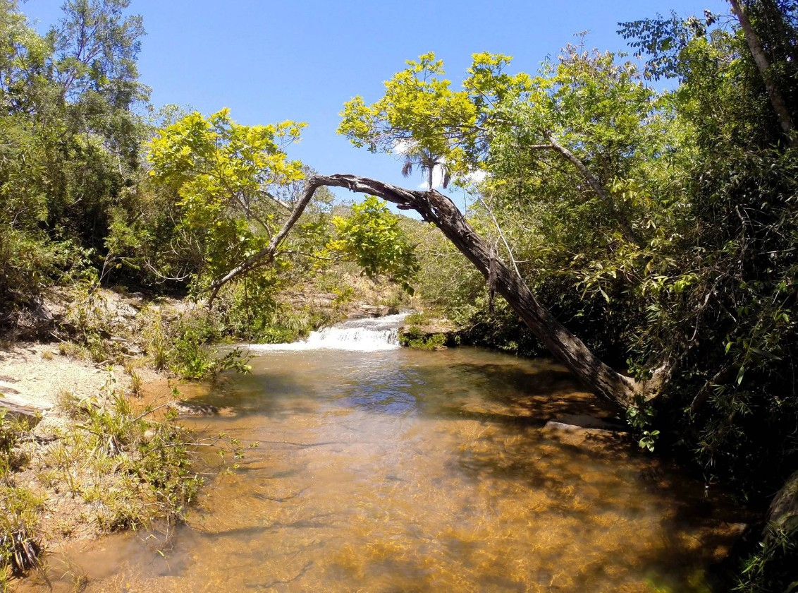
Crédito: Jair de Souza Júnior
A Tabela 2 apresenta os dados referentes à vegetação predominante na região nos anos de 2016 e 2024.
| Ano | Campo rupestre | Campo sujo | Cerrado rupestre | Cerradão | Cerrado típico | Mata de galeria | Solo exposto | Vereda |
|---|---|---|---|---|---|---|---|---|
| 2016 | 0,65% | 0,46% | 47,62% | 8,58% | 32,72% | 3,30% | 2,85% | 3,79% |
| 2024 | 0,25% | 0,04% | 22,08% | 6,08% | 44,12% | 6,12% | 8,17% | 13,11% |
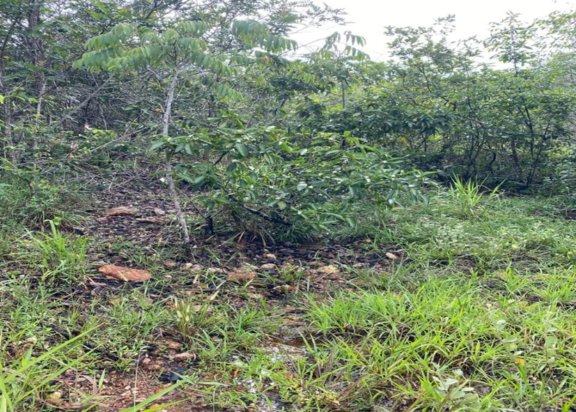
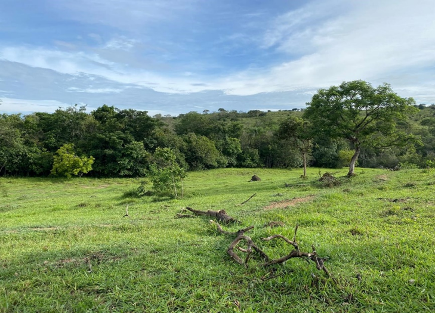
O Cerrado rupestre e o Cerrado típico são as vegetações predominantes na Trilha da Cachoeira da Capivara.
A figura 12 apresenta o mapa de cobertura vegetal da área referente à Trilha da Cachoeira da Capivara, para 2024.
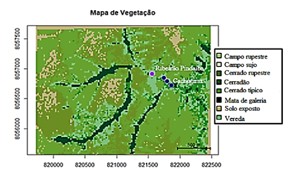
Interpretação das Mudanças na Vegetação (2016–2024)
A análise comparativa entre os anos de 2016 a 2024 demonstra transformações significativas na composição da vegetação da Trilha da Cachoeira da Capivara. O Cerrado rupestre, que em 2016 representava mais de 47% da área, sofreu uma redução acentuada para cerca de 22% em 2024, indicando retração expressiva desse tipo de formação vegetal.
Por outro lado, houve um aumento relevante do Cerrado típico, que passou de aproximadamente 32% para 44%, tornando-se a fitofisionomia predominante na região.
Esse avanço sugere um processo de transição e sucessão ecológica, em que áreas antes dominadas pelo Cerrado rupestre podem ter se regenerado em formações mais densas.
De modo geral, os dados indicam que, apesar da redução do Cerrado rupestre, houve expansão de formações florestadas e típicas do Cerrado, sugerindo um cenário de regeneração e adensamento da vegetação local. Ao mesmo tempo, os acréscimos de Solo exposto e Veredas revelam a necessidade de monitoramento constante, para avaliar se tais mudanças estão ligadas a fatores ambientais naturais ou a pressões antrópicas.